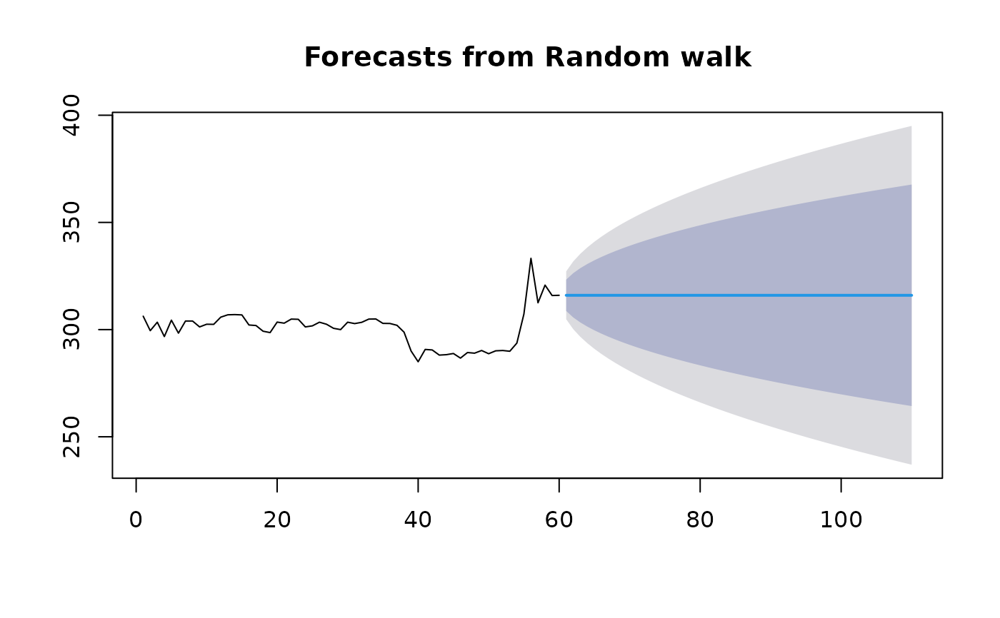

rwf() returns forecasts and prediction intervals for a random walk with
drift model applied to y. This is equivalent to an ARIMA(0,1,0) model with
an optional drift coefficient. naive() is simply a wrapper to rwf() for
simplicity. snaive() returns forecasts and prediction intervals from an
ARIMA(0,0,0)(0,1,0)m model where m is the seasonal period.
Usage
rw_model(y, lag = 1, drift = FALSE, lambda = NULL, biasadj = FALSE)
# S3 method for class 'rw_model'
forecast(
object,
h = 10,
level = c(80, 95),
fan = FALSE,
lambda = NULL,
simulate = FALSE,
bootstrap = FALSE,
npaths = 5000,
biasadj = FALSE,
...
)
rwf(
y,
h = 10,
drift = FALSE,
level = c(80, 95),
fan = FALSE,
lambda = NULL,
biasadj = FALSE,
...,
x = y
)
naive(
y,
h = 10,
level = c(80, 95),
fan = FALSE,
lambda = NULL,
biasadj = FALSE,
...,
x = y
)
snaive(
y,
h = 2 * frequency(x),
level = c(80, 95),
fan = FALSE,
lambda = NULL,
biasadj = FALSE,
...,
x = y
)Arguments
- y
A numeric vector or time series of class
ts.- lag
Lag parameter for lagged walks.
lag = 1corresponds to standard random walk (i.e., naive forecast), whilelag = mcorresponds to seasonal naive method where m is the seasonal period.- drift
Logical flag. If
TRUE, fits a random walk with drift model.- lambda
Box-Cox transformation parameter. If
lambda = "auto", then a transformation is automatically selected usingBoxCox.lambda. The transformation is ignored if NULL. Otherwise, data transformed before model is estimated.- biasadj
Use adjusted back-transformed mean for Box-Cox transformations. If transformed data is used to produce forecasts and fitted values, a regular back transformation will result in median forecasts. If biasadj is
TRUE, an adjustment will be made to produce mean forecasts and fitted values.- object
a time series or time series model for which forecasts are required.
- h
Number of periods for forecasting.
- level
Confidence levels for prediction intervals.
- fan
If
TRUE, level is set toseq(51, 99, by = 3). This is suitable for fan plots.- simulate
If
TRUE, prediction intervals are produced by simulation rather than using analytic formulae. Errors are assumed to be normally distributed.- bootstrap
If
TRUE, then prediction intervals are produced by simulation using resampled errors (rather than normally distributed errors).- npaths
Number of sample paths used in computing simulated prediction intervals.
- ...
Additional arguments affecting the forecasts produced. If
model = NULL,forecast.tspasses these toets()orstlf()depending on the frequency of the time series. Ifmodelis notNULL, the arguments are passed to the relevant modelling function.- x
Deprecated. Included for backwards compatibility.
Value
An object of class "forecast".
The function summary is used to obtain and print a summary of the results,
while the function plot produces a plot of the forecasts and prediction
intervals.
The generic accessor functions fitted.values and residuals extract
useful features of the value returned by naive or snaive.
An object of class "forecast" is a list containing at least the
following elements:
- model
A list containing information about the fitted model
- method
The name of the forecasting method as a character string
- mean
Point forecasts as a time series
- lower
Lower limits for prediction intervals
- upper
Upper limits for prediction intervals
- level
The confidence values associated with the prediction intervals
- x
The original time series (either
objectitself or the time series used to create the model stored asobject).- residuals
Residuals from the fitted model. That is x minus fitted values.
- fitted
Fitted values (one-step forecasts)
Details
The random walk with drift model is
$$Y_t=c + Y_{t-1} + Z_t$$
where \(Z_t\) is a normal iid error. Forecasts are given by
$$Y_n(h)=ch+Y_n$$
If there is no drift (as in naive), the drift parameter c=0. Forecast
standard errors allow for uncertainty in estimating the drift parameter
(unlike the corresponding forecasts obtained by fitting an ARIMA model
directly).
The seasonal naive model is
$$Y_t= Y_{t-m} + Z_t$$
where \(Z_t\) is a normal iid error.
Examples
model <- rw_model(gold)
forecast(model, h = 50)
#> Point Forecast Lo 80 Hi 80 Lo 95 Hi 95
#> 1109 382.3 374.4556 390.1444 370.3031 394.2969
#> 1110 382.3 371.2064 393.3936 365.3338 399.2662
#> 1111 382.3 368.7131 395.8869 361.5207 403.0793
#> 1112 382.3 366.6112 397.9888 358.3061 406.2939
#> 1113 382.3 364.7594 399.8406 355.4740 409.1260
#> 1114 382.3 363.0853 401.5147 352.9136 411.6864
#> 1115 382.3 361.5457 403.0543 350.5591 414.0409
#> 1116 382.3 360.1127 404.4873 348.3675 416.2325
#> 1117 382.3 358.7669 405.8331 346.3092 418.2908
#> 1118 382.3 357.4939 407.1061 344.3623 420.2377
#> 1119 382.3 356.2831 408.3169 342.5106 422.0894
#> 1120 382.3 355.1263 409.4737 340.7414 423.8586
#> 1121 382.3 354.0167 410.5833 339.0444 425.5556
#> 1122 382.3 352.9490 411.6510 337.4115 427.1885
#> 1123 382.3 351.9188 412.6812 335.8360 428.7640
#> 1124 382.3 350.9225 413.6775 334.3122 430.2878
#> 1125 382.3 349.9568 414.6432 332.8353 431.7647
#> 1126 382.3 349.0191 415.5809 331.4013 433.1987
#> 1127 382.3 348.1071 416.4929 330.0065 434.5935
#> 1128 382.3 347.2189 417.3811 328.6480 435.9520
#> 1129 382.3 346.3525 418.2475 327.3231 437.2769
#> 1130 382.3 345.5066 419.0934 326.0293 438.5707
#> 1131 382.3 344.6797 419.9203 324.7647 439.8353
#> 1132 382.3 343.8705 420.7295 323.5272 441.0728
#> 1133 382.3 343.0781 421.5219 322.3153 442.2847
#> 1134 382.3 342.3013 422.2987 321.1273 443.4727
#> 1135 382.3 341.5394 423.0606 319.9620 444.6380
#> 1136 382.3 340.7914 423.8086 318.8181 445.7819
#> 1137 382.3 340.0567 424.5433 317.6945 446.9055
#> 1138 382.3 339.3345 425.2655 316.5900 448.0100
#> 1139 382.3 338.6243 425.9757 315.5038 449.0962
#> 1140 382.3 337.9255 426.6745 314.4350 450.1650
#> 1141 382.3 337.2375 427.3625 313.3828 451.2172
#> 1142 382.3 336.5598 428.0402 312.3464 452.2536
#> 1143 382.3 335.8920 428.7080 311.3251 453.2749
#> 1144 382.3 335.2337 429.3663 310.3183 454.2817
#> 1145 382.3 334.5845 430.0155 309.3254 455.2746
#> 1146 382.3 333.9440 430.6560 308.3459 456.2541
#> 1147 382.3 333.3118 431.2882 307.3791 457.2209
#> 1148 382.3 332.6878 431.9122 306.4246 458.1754
#> 1149 382.3 332.0714 432.5286 305.4821 459.1179
#> 1150 382.3 331.4626 433.1374 304.5509 460.0491
#> 1151 382.3 330.8609 433.7391 303.6308 460.9692
#> 1152 382.3 330.2663 434.3337 302.7213 461.8787
#> 1153 382.3 329.6783 434.9217 301.8220 462.7780
#> 1154 382.3 329.0968 435.5032 300.9327 463.6673
#> 1155 382.3 328.5216 436.0784 300.0531 464.5469
#> 1156 382.3 327.9525 436.6475 299.1827 465.4173
#> 1157 382.3 327.3893 437.2107 298.3214 466.2786
#> 1158 382.3 326.8318 437.7682 297.4688 467.1312
gold.fcast <- rwf(gold[1:60], h = 50)
plot(gold.fcast)

plot(naive(gold, h = 50), include = 200)
 plot(snaive(wineind))
plot(snaive(wineind))